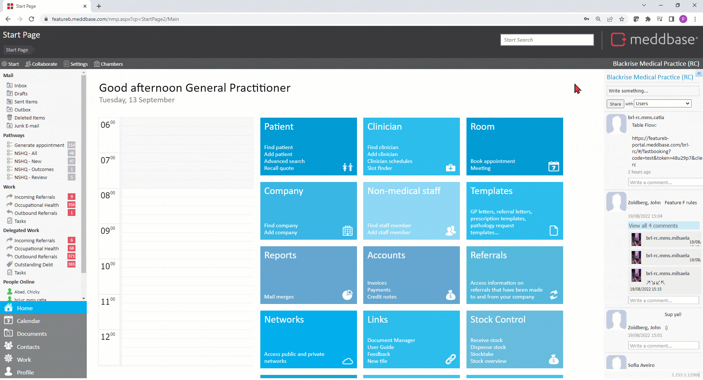

*Building reports requires access to the Admin section.
**Selecting a Root Table determines what will be displayed in each Row of your report e.g. selecting Billing Cancellation Rules as the root table will result in a report displaying an instance of a Cancellation Rule in each row.
Click here for a detailed article on selecting a root table.

Selecting a Root Table displays the Column Preview on the right-hand side, allowing you to view the Columns available in the selected table, as well as connected tables.
Tables querying Billing Rules can be divided into 2 categories, described below.
Tables querying the Billing Rule label and configuration
Tables and their Columns belonging to this group query the respective Billing Rule configuration aspects and labelling details.
As an example, consider the Billing Price List Rules table. A report with this table selected as the Root Table will show an instance of a Price List in each row.
The columns available in this table are as follows:
- ID - this column queries the Price List ID number automatically assigned to the rule upon its creation in Meddbase
- Name - this column queries the value entered in the Price List Details 'Name' field
- Price Kind - this column queries the value selected in the 'Price Type' dropdown menu (Total Charged Price or Benefit Maxima)
- Provide - this column queries whether the Price List has the 'Provide services with prices?' box ticked
None of the above columns query the services a given Price List provides. Instead, the Billing Price List Rules table focuses on the rule labelling and aspects of its functionality.
There are other tables available in the Report Query Builder that fall in the same category*:
Root Table | Report Output |
|---|---|
| Billing Cancellation Rules | Selecting this table as the Root Table will produce a report showing a list of all existing Cancellation Charges Rules and allow querying their labels, and functionality attributes by using columns like: Id, Name, Cancellation Kind, Notice Period and more |
| Billing Credit Rules | Selecting this table as the Root Table will produce a report showing a list of all existing Service Credits Rules and allow querying their labels, and functionality attributes by using columns like: Id, First Included Day, First Excluded Day, Periodic Renewal Enabled and more |
| Billing Deny Rules | Selecting this table as the Root Table will produce a report showing a list of all existing Deny Services Rules and allow querying their labels, and functionality attributes by using columns like: Id, Name, Deny All Except |
| Billing Dynamic Price Rules | Selecting this table as the Root Table will produce a report showing a list of all existing Dynamic Price Rules and allow querying their labels, and functionality attributes by using columns like: Id, Name, Top Price Band |
| Billing Fee Percent Rules | Selecting this table as the Root Table will produce a report showing a list of all existing Fee Percent Rules and allow querying their labels, and functionality attributes by using columns like: Id, Name, Attendee Is Billing Company, Default Percent and more |
| Billing Fixed Fee Rules | Selecting this table as the Root Table will produce a report showing a list of all existing Fee Rules and allow querying their labels, and functionality attributes by using columns like: Id, Name, Attendee Is Billing Company and more |
| Billing Invoice Group Rules | Selecting this table as the Root Table will produce a report showing a list of all existing Invoice Grouping Rules and allow querying their labels, functionality attributes by using columns like: Id, Default value |
| Billing Multiple Procedure Rules | Selecting this table as the Root Table will produce a report showing a list of all existing Service Credits Rules and allow allow querying querying their labels, and functionality attributes by using columns like: Id, Rule, Percentage of Supplement on Two Services and more |
| Billing Patient Portal Pathway Rules | Selecting this table as the Root Table will produce a report showing a list of all existing Patient Portal Pathway Rules and allow querying their labels, and functionality attributes by using columns like: Id, Name, Maximum Running Per Pathway |
| Billing Portal Referral Rules | Selecting this table as the Root Table will produce a report showing a list of all existing Portal Referral Rules and allow querying their labels, and functionality attributes by using columns like: Id, Name, Allow Booking, Allow Referring, Days To Make Contact and more |
| Billing Price List Modifier Rules | Selecting this table as the Root Table will produce a report showing a list of all existing Price List Modifier Rules and allow querying their labels, and functionality attributes by using columns like: Id, Name, Percentage |
| Billing Provide Services Rules | Selecting this table as the Root Table will produce a report showing a list of all existing Provide Services Rules and allow querying their labels by using columns like: Id, Name |
| Billing Rules | Selecting this table as the Root Table will produce a report showing a list of all existing Billing Rules and their labels, and functionality attributes by using columns like: Id, Name, Kind, Date Range Type, Start Date, End Date and more |
| Billing RuleSets | Selecting this table as the Root Table will produce a report showing a list of all existing Rule Sets and allow querying their labels by using columns like: Id, Name |
| Billing Self Book Rules | Selecting this table as the Root Table will produce a report showing a list of all existing Patient Self-book Rules and allow querying their labels, and functionality attributes by using columns like: Id, Name, Allow patients to self-book |
*The Reporting schema allows linking the tables belonging to the above category with other tables querying the Billing Rule type and the Services included in them.
Tables querying the Billing Rule services
Tables and their Columns belonging to this group query the services added to/selected on the respective Billing Rule and the services' labels, prices or other attributes, e.g. fee percentage value
As an example, consider the Billing Price List Services table.
A report with this table selected as the Root Table will show an instance of a service added to Price List(s) in each row.
The columns available in this table are as follows:
- ID - this column queries the Price List ID number automatically assigned to the rule upon its creation in Meddbase
- Service Price - this column queries the service price, incl. £0
There are other tables available in the Report Query Builder that fall in the same category:
Root Table | Report Output |
|---|---|
| Billing Benefit Maxima Rule Services | Selecting this table as the Root Table will produce a report showing a list of all existing services added to/selected on Benefit Maxima Percentage rules and allow querying the service labels, prices or other attributes by using columns like: Id, Percentage |
| Billing Credit Rule Services | Selecting this table as the Root Table will produce a report showing a list of all existing services added to/selected on Service Credits rules and allow querying the service labels, prices or other attributes by using columns like: Id, Service Credits |
| Billing Fee Percent Rule Services | Selecting this table as the Root Table will produce a report showing a list of all existing services added to/selected on Fee Percent rules and allow querying the service labels, prices or other attributes by using columns like: Id, Percent |
| Billing Fee Rule Services | Selecting this table as the Root Table will produce a report showing a list of all existing services added to/selected on Fee rules and allow querying the service labels, prices or other attributes by using columns like: Id, Fee |
| Billing Invoice Group Rule Services | Selecting this table as the Root Table will produce a report showing a list of all existing services added to/selected on Invoice Grouping rules and allow querying the service labels, prices or other attributes by using columns like: Id, Value |
| Billing Safe Name Rule Services | Selecting this table as the Root Table will produce a report showing a list of all existing services added to/selected on Safe Name rules and allow querying the service labels, prices or other attributes by using columns like: Id, Safe Name |